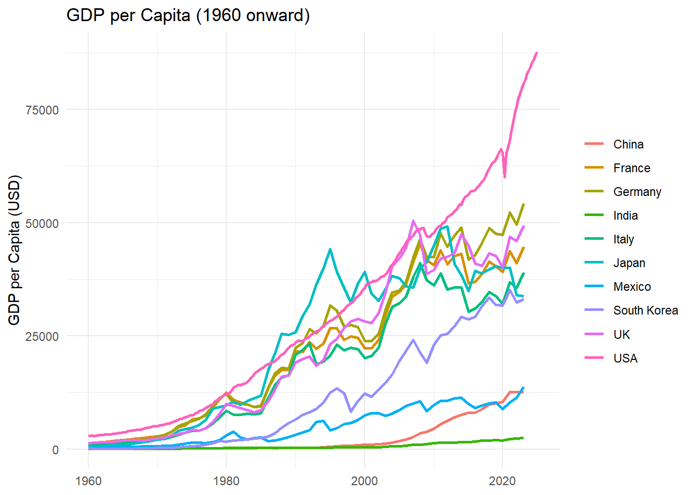

The following objects are masked from 'package:stats':
filter, lag
The following objects are masked from 'package:base':
intersect, setdiff, setequal, union
library(ggplot2)library(tidyr)library(gganimate)
Warning: package 'gganimate' was built under R version 4.4.3
No renderer backend detected. gganimate will default to writing frames to separate files
Consider installing:
- the `gifski` package for gif output
- the `av` package for video output
and restarting the R session
library(ggthemes)
Warning: package 'ggthemes' was built under R version 4.4.3
library(httr)library(jsonlite)library(lubridate)
Attaching package: 'lubridate'
The following objects are masked from 'package:base':
date, intersect, setdiff, union
# setwd("C:/Users/orazz/OneDrive - The City University of New York (1)/MASTER/STA9750-2025-SPRING")setwd("C:/Users/salda/OneDrive/Documents/money team")FRED_key <-readLines("FRED_key.txt")
Warning in readLines("FRED_key.txt"): incomplete final line found on
'FRED_key.txt'
get_fred<-function(id){ base_url <-"https://api.stlouisfed.org/fred/series/observations?series_id=" res <-GET(paste0(base_url,id,"&api_key=",FRED_key,"&file_type=json")) res_content <-content(res, as ="text", encoding ="UTF-8") json <-fromJSON(res_content) data <-json$observations data <- data |>mutate(value =as.numeric(value),# immediately convert to usable formatdate =as.Date(date))return(data)}# Read your Alpha Vantage keyAV_key <-readLines("Alphavantage_key.txt")
Warning in readLines("Alphavantage_key.txt"): incomplete final line found on
'Alphavantage_key.txt'
# Function to get data from Alpha Vantage for a given tickerGET_AV <-function(ticker){# Build the URL for the monthly adjusted time series url <-paste0("https://www.alphavantage.co/query?function=TIME_SERIES_MONTHLY_ADJUSTED","&symbol=", ticker,"&apikey=", AV_key )# Make the GET request and parse the JSON response res <-GET(url) res_content <-content(res, as ="text", encoding ="UTF-8") j <-fromJSON(res_content, flatten =TRUE)# Extract the "Monthly Adjusted Time Series" data data <- j$`Monthly Adjusted Time Series`# Create empty vectors to store our data close <-c() adjusted_close <-c() low <-c() volume <-c() dividend <-c()# Loop over each element in the data to unpack the values.for(i inseq_along(data)){ close <-append(close, data[[i]][["4. close"]]) adjusted_close <-append(adjusted_close, data[[i]][["5. adjusted close"]]) low <-append(low, data[[i]][["3. low"]]) volume <-append(volume, data[[i]][["6. volume"]]) dividend <-append(dividend, data[[i]][["7. dividend amount"]]) }# Build the data frame df <-data.frame(date =as.Date(names(data)),close =as.numeric(close),adjusted_close =as.numeric(adjusted_close),low =as.numeric(low),volume =as.numeric(volume),dividend =as.numeric(dividend) )return(df)}
The following object is masked from 'package:jsonlite':
flatten
# Named vector of FRED IDsseries_ids <-c(USA ="A939RC0Q052SBEA",China ="PCAGDPCNA646NWDB",Germany ="PCAGDPDEA646NWDB",India ="PCAGDPINA646NWDB",Japan ="PCAGDPJPA646NWDB",UK ="PCAGDPGBA646NWDB",France ="PCAGDPFRA646NWDB",Italy ="PCAGDPITA646NWDB")# Pull, tag, combine, and then filter to 1960-01-01 onwardgdp_pc_long <- series_ids |>imap_dfr(function(id, country) {get_fred(id) |>select(date, value) |>mutate(country = country,gdp_pc = value ) |>select(date, country, gdp_pc) }) |>filter(date >=as.Date("1960-01-01"))# Pivot to wide form (if you need it)gdp_pc_wide <- gdp_pc_long |>pivot_wider(names_from = country,values_from = gdp_pc )head(gdp_pc_long)
date country gdp_pc
1 1960-01-01 USA 3026
2 1960-04-01 USA 2999
3 1960-07-01 USA 3009
4 1960-10-01 USA 2968
5 1961-01-01 USA 2984
6 1961-04-01 USA 3030
# And the plot:gdp_pc_long |>ggplot(aes(x = date, y = gdp_pc, color = country)) +geom_line(size =1) +labs(title ="GDP per Capita (1960 onward)",x =NULL,y ="GDP per Capita (USD)",color =NULL ) +theme_minimal()
Warning: Using `size` aesthetic for lines was deprecated in ggplot2 3.4.0.
ℹ Please use `linewidth` instead.

#Inflation
library(dplyr)library(purrr)inflation_ids <-c(USA ="FPCPITOTLZGUSA", China ="FPCPITOTLZGCHN", Germany ="FPCPITOTLZGDEU", India ="FPCPITOTLZGIND", Japan ="FPCPITOTLZGJPN", UK ="FPCPITOTLZGGBR", France ="FPCPITOTLZGFRA", Italy ="FPCPITOTLZGITA")# Fetch, tag, and combine into one long tibbleinflation_long <- inflation_ids |>imap_dfr(function(id, country) {get_fred(id) |>select(date, value) |>mutate(country = country,inflation = value ) |>select(date, country, inflation) })head(inflation_long)
date country inflation
1 1960-01-01 USA 1.457976
2 1961-01-01 USA 1.070724
3 1962-01-01 USA 1.198773
4 1963-01-01 USA 1.239669
5 1964-01-01 USA 1.278912
6 1965-01-01 USA 1.585169
date country price
1 2025-05-12 USA 582.9900
2 2025-04-30 USA 554.5400
3 2025-03-31 USA 559.3900
4 2025-02-28 USA 592.3990
5 2025-01-31 USA 600.0161
6 2024-12-31 USA 584.3233
#> # A tibble: 6 × 3#> date country price#> <date> <chr> <dbl>#> 1 1993-01-29 USA 43.5#> 2 1993-02-26 USA 44.1#> 3 1993-03-31 USA 44.8#> 4 1993-04-30 USA 45.4#> 5 1993-05-28 USA 45.2#> 6 1993-06-30 USA 45.5# Plot the price history for each ETFetf_prices_long |>ggplot(aes(x = date, y = price, color = country)) +geom_line(size =1) +labs(title ="ETF Price History by Country",subtitle ="Adjusted closing prices for representative country ETFs",x =NULL,y ="Adjusted Close Price (USD)",color =NULL ) +theme_minimal() +theme(plot.title =element_text(size =16, face ="bold"),plot.subtitle =element_text(size =12),legend.position ="bottom" )
# Pivot to wide form so each country is a columnetf_prices_wide <- etf_prices_long |>pivot_wider(names_from = country,values_from = price )# Print the first 10 rows in the consolehead(etf_prices_wide, 10)
# (Optional) For a nicer table in R Markdown or RStudio Viewer:# install.packages("knitr") # if you haven’t alreadylibrary(knitr)kable(head(etf_prices_wide, 10),caption ="ETF Adjusted Closing Prices by Country (First 10 Observations)")
ETF Adjusted Closing Prices by Country (First 10 Observations)
date
USA
China
Germany
India
Japan
UK
France
Italy
2025-05-12
582.9900
36.0400
40.38
54.3200
72.8000
38.2400
41.8100
45.6600
2025-04-30
554.5400
33.8600
39.49
53.5700
71.4300
38.1000
41.0400
44.2100
2025-03-31
559.3900
35.8400
37.08
51.4800
68.5600
37.4700
39.8000
42.3200
2025-02-28
592.3990
35.2300
36.07
48.1000
68.4700
37.0400
39.5400
40.8000
2025-01-31
600.0161
31.8900
34.63
50.9900
68.3100
35.6100
38.6300
38.5500
2024-12-31
584.3233
30.4400
31.82
52.6400
67.1000
33.9000
35.8800
35.9700
2024-11-29
598.7531
29.8707
32.27
54.3820
68.6140
35.0640
35.9809
35.7916
2024-10-31
565.0568
31.1025
32.32
54.4217
67.0190
34.8191
37.6285
37.4462
2024-09-30
570.1445
31.3194
33.84
58.1048
70.4355
36.6409
40.1000
38.3720
2024-08-30
558.4127
26.0765
32.63
57.3006
70.8588
36.7584
39.5839
38.2637
Analysis
library(dplyr)library(tidyr)library(purrr)library(PerformanceAnalytics) # for return calculations
Warning: package 'PerformanceAnalytics' was built under R version 4.4.3
Loading required package: xts
Warning: package 'xts' was built under R version 4.4.3
Loading required package: zoo
Warning: package 'zoo' was built under R version 4.4.3
Attaching package: 'zoo'
The following objects are masked from 'package:base':
as.Date, as.Date.numeric
######################### Warning from 'xts' package ##########################
# #
# The dplyr lag() function breaks how base R's lag() function is supposed to #
# work, which breaks lag(my_xts). Calls to lag(my_xts) that you type or #
# source() into this session won't work correctly. #
# #
# Use stats::lag() to make sure you're not using dplyr::lag(), or you can add #
# conflictRules('dplyr', exclude = 'lag') to your .Rprofile to stop #
# dplyr from breaking base R's lag() function. #
# #
# Code in packages is not affected. It's protected by R's namespace mechanism #
# Set `options(xts.warn_dplyr_breaks_lag = FALSE)` to suppress this warning. #
# #
###############################################################################
Attaching package: 'xts'
The following objects are masked from 'package:dplyr':
first, last
Attaching package: 'PerformanceAnalytics'
The following object is masked from 'package:graphics':
legend
# up at the top of your scriptlibrary(TTR) # <- gives you ROC()
Warning: package 'TTR' was built under R version 4.4.3
library(PerformanceAnalytics)etf_ret <- etf_prices_wide |>arrange(date) |>mutate(across(-date, ~ROC(.x, type ="discrete"))) |> tidyr::drop_na()# 1b) Compute rolling annual GDP-per-capita growth per country# (using quarterly GDP PC → annualized % change)gdp_growth <- gdp_pc_wide |>arrange(date) |>mutate(across(-date, ~ (./lag(., 4) -1) *100, .names ="{.col}_growth")) |>select(date, ends_with("_growth")) |>drop_na()
library(dplyr)library(tidyr)library(zoo) # for as.yearqtr()library(TTR) # for ROC()library(ggplot2)library(PerformanceAnalytics)library(xts)# 0) Define your regionsregions <-c("USA","China","Germany","India","Japan","UK","France","Italy")# 1) Quarterly GDP‐pc growth (annualized %)gdp_growth_q <- gdp_pc_wide |>arrange(date) |>mutate(across(-date, ~ (./lag(.,4) -1)*100, .names ="{.col}_g")) |>mutate(quarter =as.yearqtr(date)) |>group_by(quarter) |>slice_tail(n =1) |>ungroup() |>select(quarter, ends_with("_g"))# turn to long form: one row per countrygdp_long <- gdp_growth_q |>pivot_longer(cols =ends_with("_g"),names_to ="country",names_pattern ="(.+)_g",values_to ="gdp_g" )# 2) Quarterly inflationinfl_q <- inflation_long |>mutate(quarter =as.yearqtr(date)) |>group_by(quarter, country) |>slice_tail(n =1) |>ungroup()# turn to long forminfl_long <- infl_q |>select(quarter, country, inflation) |>rename(infl_i = inflation)# 3) Merge signals into one long tablesignals_long <-full_join(gdp_long, infl_long, by =c("quarter","country"))# 4) Compute monthly ETF returns & tag quarteretf_ret <- etf_prices_wide |>arrange(date) |>mutate(across(-date, ~ROC(.x, type ="discrete"))) |>drop_na() |>mutate(quarter =as.yearqtr(date))# 5) Calendar strategy: equal‐weightport_cal <- etf_ret |>rowwise() |>mutate(port =mean(c_across(all_of(regions)))) |>ungroup() |>select(date, port)# 6) Tactical weights in long formtac_long <- signals_long |>group_by(quarter) |>mutate(down = (gdp_g <0) | (infl_i >4),down =replace_na(down, FALSE),base =1/n(),w0 =if_else(down, base *0.5, NA_real_) ) |>ungroup() |>group_by(quarter) |>mutate(freed =sum(base - w0, na.rm =TRUE),up =!down,w =if_else(is.na(w0), freed /sum(up), w0) ) |>ungroup() |>select(quarter, country, w)# 7) Pivot tactical weights back to wide (one column per country)quarterly_wts <- tac_long |>pivot_wider(names_from = country,values_from = w,names_prefix ="",values_fill =0 ) |>rename_with(~paste0(.x, "_wt"), all_of(regions))# 8) Tactical strategy: apply those weights each monthport_tac <- etf_ret |>left_join(quarterly_wts, by ="quarter") |>rowwise() |>mutate(port =sum(c_across(all_of(regions)) *c_across(all_of(paste0(regions, "_wt"))) ) ) |>ungroup() |>select(date, port)# 9) Compare & plot cumulative returnscompare <-bind_rows(Calendar = port_cal,Tactical = port_tac,.id ="strategy")compare |>group_by(strategy) |>arrange(date) |>mutate(cum =cumprod(1+ port) -1) |>ggplot(aes(date, cum, color = strategy)) +geom_line(linewidth =1) +labs(title ="Calendar vs. GDP/Inflation Tactical Rebalancing",x =NULL, y ="Cumulative Return",color =NULL ) +theme_minimal()
Warning: Removed 2 rows containing missing values or values outside the scale range
(`geom_line()`).